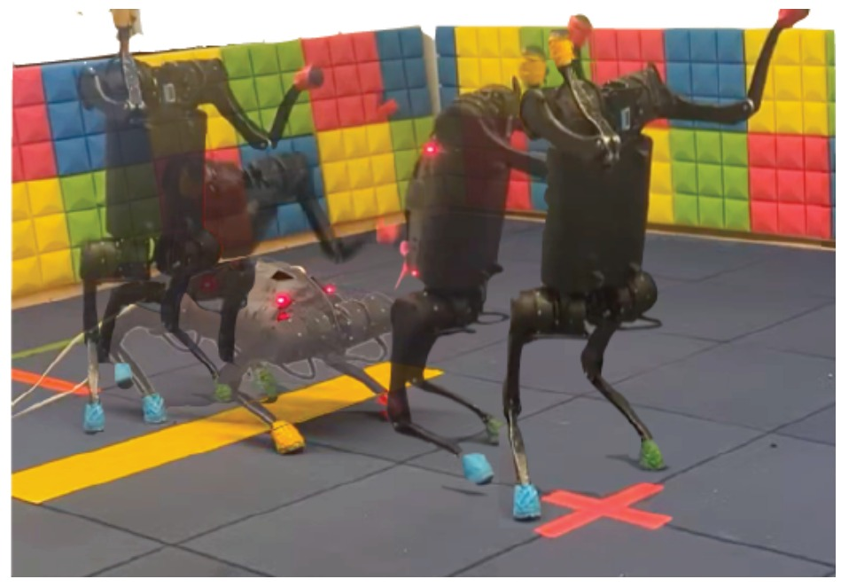
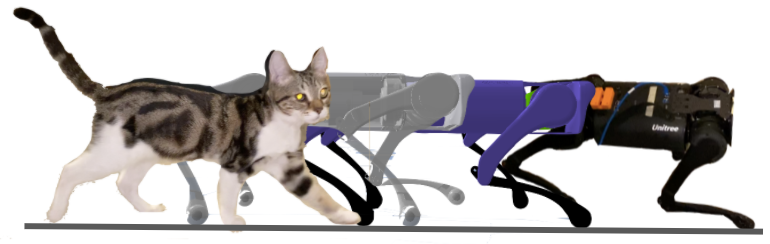
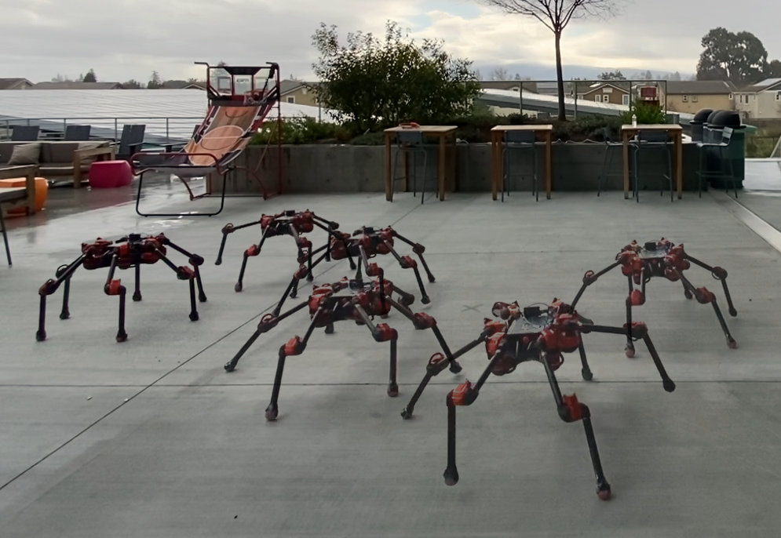
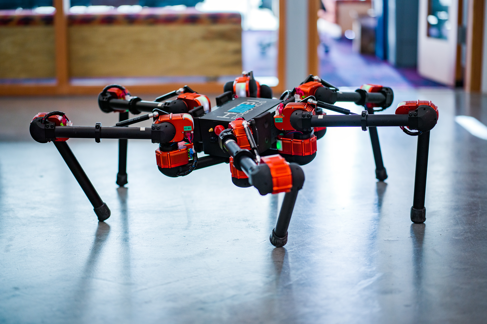
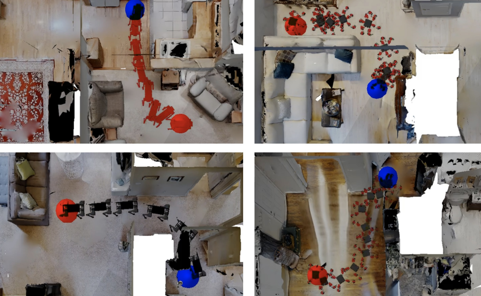
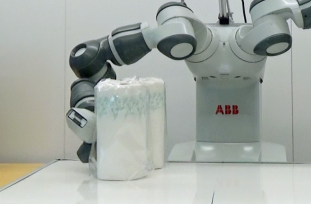
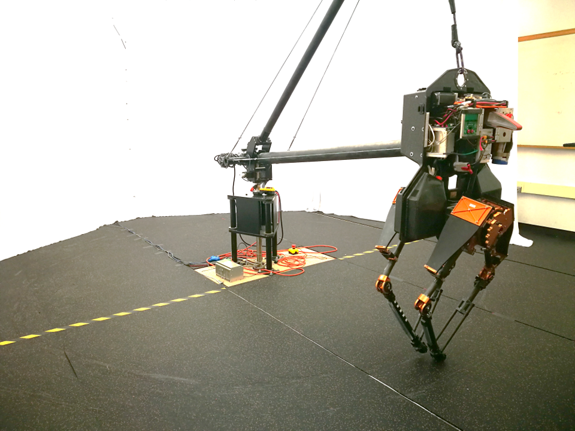

Tianyu Li 黎天宇
I am a Founding Scientist at Dexmate. I earned my Ph.D. in Computer Science from Georgia Tech. My research focuses on Agentic Robotics and Robot Whole-body Control.
There are a few folks that own the same name, such as Tianyu Li@MIT and Tianyu Li@UPENN, please make sure you contact the correct Tianyu Li.
Experience
Employment
-
Dexmate
Founding Scientist
2025 — Present
-
FAIR @ Meta
Researcher
2024
-
FAIR @ Facebook
Research Scientist
2019 — 2021
Education
-
Georgia Tech
Ph.D. in Computer Science
Advisor: Prof. Sehoon Ha
Thesis: Cross-Embodiment Whole-Body Skill Imitation
2022 — 2025
-
Carnegie Mellon University
M.S. in Computational Science
Advisors: Prof. Hartmut Geyer, Prof. Chris Atkeson
2017 — 2018
-
Beihang University
B.E. in Energy and Power Engineering
2013 — 2017
Publications
Switch-JustDance: Benchmarking Whole-Body Motion Tracking Policies Using a Commercial Console Game
CVPR Findings, 2026Jeonghwan Kim*, Wontaek Kim*, Yidan Lu*, Jin Cheng*, Fatemeh Zargarbashi*, Zicheng Zeng*, Zekun Qi*, Zhiyang Dou, Nitish Sontakke, Donghoon Baek, Sehoon Ha, Tianyu Li
MoReFlow: Motion Retargeting Learning through Unsupervised Flow Matching
arXiv, 2025Wontaek Kim, Tianyu Li*, Sehoon Ha*
Switch4EAI: Leveraging Console Game Platform for Benchmarking Robotic Athletics
CoRL Workshop, 2025Tianyu Li, Jeonghwan Kim, Wontaek Kim, Donghoon Baek, Seungeun Rho, Sehoon Ha
Learning Physical Interaction Skills from Human Demonstrations
Arxiv, 2025Tianyu Li, Hengbo Ma, Sehoon Ha, Kwonjoon Lee
RobotMover: Learning to Move Large Objects by Imitating the Dynamic Chain
IEEE Transactions on Robotics, 2026Tianyu Li, Joanne Truong, Jimmy Yang, Alexander Clegg, Akshara Rai, Sehoon Ha, Xavier Puig
Language Guided Skill Discovery
ICLR, 2025Seungeun Rho, Laura Smith, Tianyu Li, Sergey Levine, Xue Bin Peng, Sehoon Ha
AAMDM: Accelerated Auto-regressive Motion Diffusion Model
CVPR, 2024Tianyu Li, Zhuhan Qiao, Guanqiao Ren, KangKang Yin, Sehoon Ha
CrossLoco: Human Motion Driven Control of Legged Robots via Guided Unsupervised Reinforcement Learning
ICLR, 2024Tianyu Li, Hyunyoung Jung, Matthew Gombolay, Yong Kwon Cho, Sehoon Ha
ACE: Adversarial Correspondence Embedding for Cross Morphology Motion Retargeting from Human to Nonhuman Characters
SIGGRAPH ASIA, 2023Tianyu Li, Jungdam Won, Alexander Clegg, Jeonghwan Kim, Akshara Rai, Sehoon Ha

Learning and Adapting Agile Locomotion Skills by Transferring Experience
RSS, 2023Laura Smith, J Chase Kew, Tianyu Li, Linda Luu, Xue Bin Peng, Sehoon Ha, Jie Tan, Sergey Levine
ARMP: Autoregressive Motion Planning for Quadruped Locomotion and Navigation in Complex Indoor Environment
IROS, 2023Jeonghwan Kim, Tianyu Li, Sehoon Ha

FastMimic: Model-based Motion Imitation for Agile, Diverse and Generalizable Quadrupedal Locomotion
Robotics, 2023Tianyu Li, Jungdam Won, Sehoon Ha, Akshara Rai

Planning in Learned Latent Action Spaces for Generalizable Legged Locomotion
RA-L, 2021Tianyu Li, Roberto Calandra, Deepak Pathak, Yuandong Tian, Franziska Meier, Akshara Rai

Learning Generalizable Locomotion Skills with Hierarchical Reinforcement Learning
ICRA, 2020Tianyu Li, Nathan Lambert, Roberto Calandra, Franziska Meier, Akshara Rai

Learning Navigation Skills for Legged Robots with Learned Robot Embeddings
IROS, 2020Joanne Truong, Denis Yarats, Tianyu Li, Franziska Meier, Sonia Chernova, Dhruv Batra, Akshara Rai

Bayesian Optimization in Variational Latent Spaces with Dynamic Compression
CoRL, 2019Rika Antonova, Akshara Rai, Tianyu Li, Danica Kragic

Using Deep Reinforcement Learning to Learn High-Level Policies on the ATRIAS Biped
ICRA, 2019Tianyu Li, Hartmut Geyer, Christopher G Atkeson, Akshara Rai